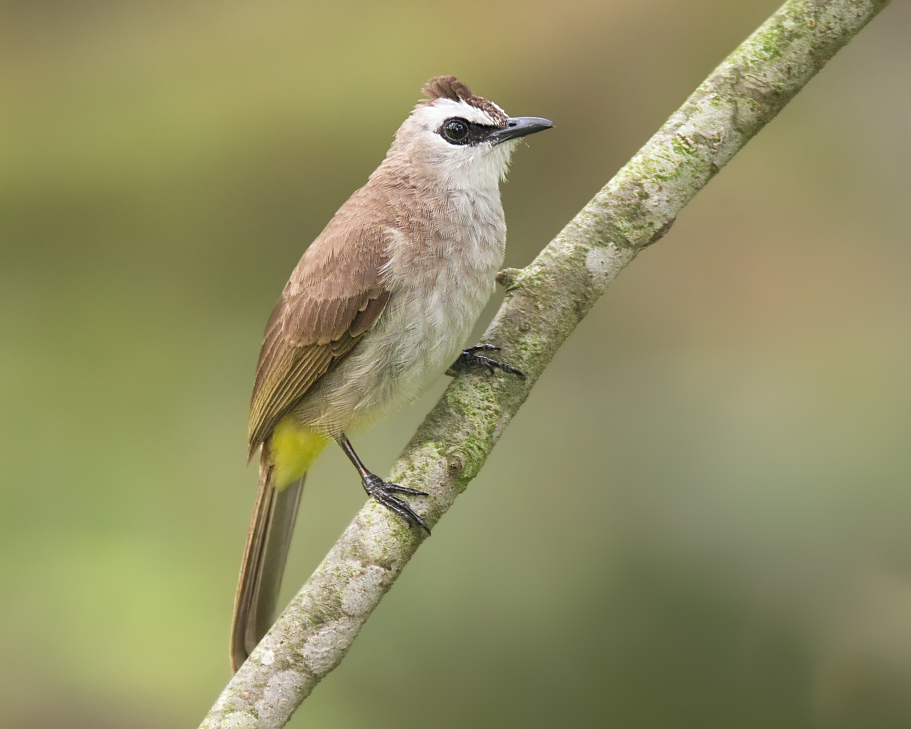
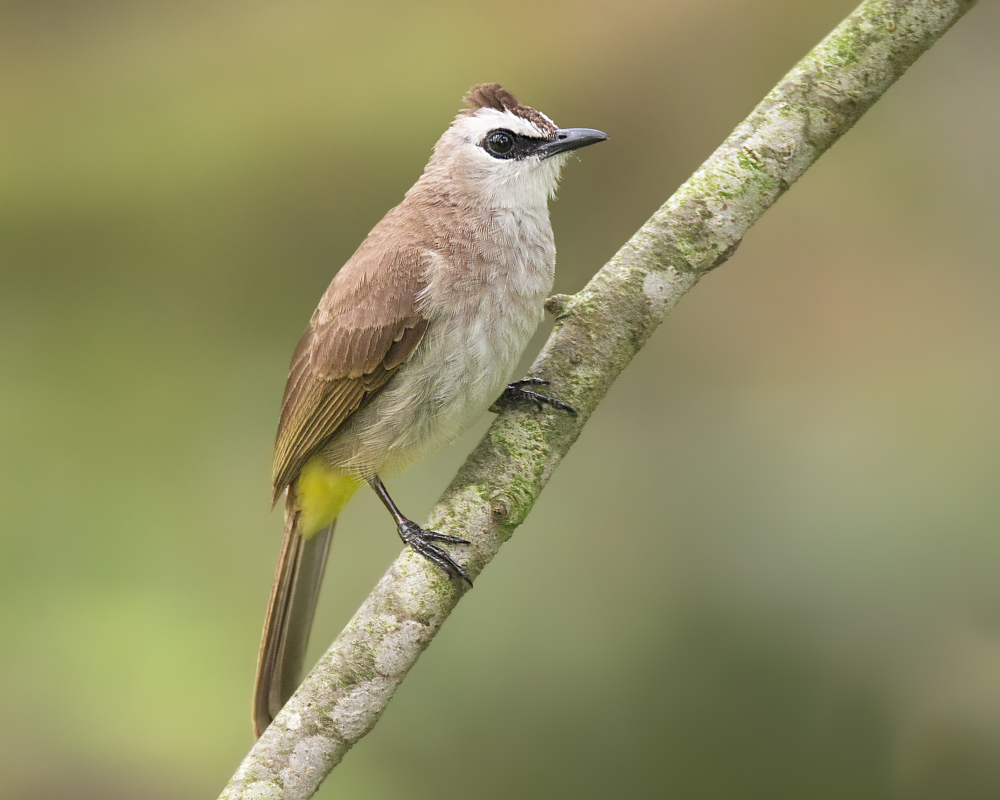

Forest Walk
Take a stroll on the step-free elevated Forest Walk of Telok Blangah Hill Park. This iconic metal bridge is the perfect place spotting birds such as the Pink-necked Green Pigeon, Yellow-vented Bulbul, Common Iora and many many more! Click on the pictures below to find out more about these beautiful birds!
 

 Useful Information
Useful Information
Difficulty level: easy
Distance: 1.3km
Duration: 35min